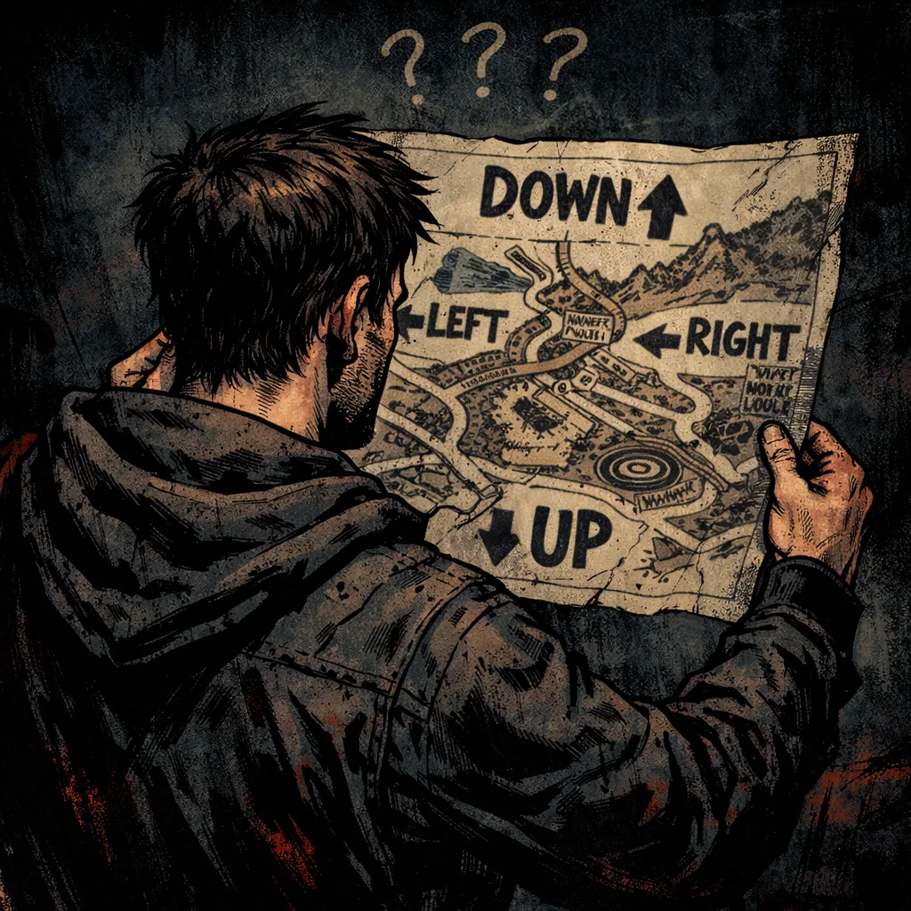

Recover-You is a free, survivor-built psychoeducation resource for people navigating trauma and addiction recovery — organized as a deliberate roadmap, not a collection of articles.
In crisis right now? Skip the roadmap — go directly to Crisis Support and find the right pathway for where you are right now.
Recovery feels impossible when you're trying to solve symptoms without understanding the system that created them. You're told to change your behaviour, build resilience, try harder — without ever being shown what happened, what adapted, or why it still shows up today.
This site is written primarily for people carrying the compounded weight of trauma and addiction — but it isn't exclusive to that experience. The way trauma takes hold in the body and shapes behaviour is universal. You don't need to be struggling with addiction to find real, grounding insight here. Every page is written through that lens, toward one goal: help you name what happened and understand how it shaped the patterns you're now trying to change. If you're in Alberta and looking for where to access care, the Alberta system navigation guide is also here.
This is the map I desperately needed 25 years ago. I had no idea where to turn, or even what questions to ask. I can't promise smooth sailing — but I can promise you'll be far more prepared for what's ahead than I ever was.

Recover-You moves through three deliberate layers. Knowing that upfront changes how you experience it.
First: education, grounded in lived experience. The science is here — woven with my own relationship to it, because concepts land differently when you can feel them. The goal is recognition: you see yourself in these patterns, release some of the shame, and finally understand the why behind what you've been carrying.
Second: a critical look at the systems meant to help. Not cynicism — validation. If treatment never once mentioned trauma, or "trauma-informed care" turned out to mean very little in practice, that frustration is real and widely shared. You are not crazy. You are not broken. These are systemic failures, not personal ones.
Third: the path forward. Evidence-based therapies, practical tools, and a resource centre that takes you from detox through to trauma-specific care — with programs broken down and linked directly to their application pages where available.
You can arrive here completely lost — no idea where to start or what you're even looking for — and leave feeling seen, understood, and with your name on a waitlist.
Trauma is a fact of life. It does not have to be a life sentence.
— Peter Levine
Orientation — Get your bearings
Understand the purpose, the voice, and how to navigate the site without feeling overwhelmed.
Why start here: Before diving into trauma science or tools, you need context and direction. This section explains why the site exists, who it’s for, and how it’s intentionally organized so you can move through it at your own pace — without shame or information overload.
Trauma Foundations — What happened, and why it still matters
Understand trauma beyond labels — what it actually is, how it shapes the nervous system, and why it drives so many adult patterns.
Why this comes next: You can't make sense of anxiety, addiction, shame, or emotional chaos until you understand the nervous system that learned to survive them. This section reframes your patterns as intelligent adaptations, not personal failures.
Brain & Body — How trauma reshapes biology
The biological mechanisms behind why trauma and addiction feel so sticky — and what actually changes them.
Why this matters: Understanding the “why” behind your symptoms removes shame and gives you a target. This section explains how trauma and addiction literally rewire the brain and nervous system — and why sobriety alone often isn’t enough.
The Reckoning — What the research actually shows
The evidence base for everything this section has been building toward — and why it should be changing how we treat people.
Why this comes last in this section: After understanding trauma, the nervous system, and the biology of addiction, this is where the clinical evidence lands. Project Harmony is the largest pooled study ever conducted on co-occurring PTSD and substance use disorder — and what it found cuts straight through decades of conventional treatment logic.
A Critical Lens — Seeing where systems fail
Honest examination of common recovery models, myths, and gaps — so you stop blaming yourself when they don’t work.
Why this matters: If you don’t understand the limits of standard approaches, it’s easy to think you’re the problem when they fail. This section gives you discernment without cynicism.
Therapeutic Models — What actually helps
Structured approaches that target thinking, emotion regulation, trauma patterns, and identity repair.
Why this matters: Insight alone rarely changes behaviour. Real progress usually requires structured methods that retrain thinking, regulate the nervous system, and challenge long-held survival patterns. This section breaks down what different therapies actually do — and when they’re useful.
Practical Tools & Skills — What to do in real time
Concrete exercises and skills you can use when patterns activate — not just ideas about them.
Why this matters: Understanding trauma is powerful — but in the moment, when anxiety spikes or urges hit, you need tools. This section focuses on practical, repeatable skills that build regulation, clarity, and healthier relational choices over time.
Identity & Growth — Who you are becoming
Moving beyond symptom management toward values, meaning, and self-definition.
Why this matters: Recovery isn’t just about stopping destructive behaviour. It’s about rebuilding identity. If trauma shaped who you became in order to survive, this section is about consciously choosing who you want to become now.
Resources — Support, next steps, and the bigger framework
When you’re ready to go further: pathways, tools, and a model that connects the whole site into one system.
Why this is last: Once you have context, language, and tools, the next step is support. This section collects external resources and lays out the larger framework behind Recover-You — so you can translate insight into an actual plan.
Contact — Reach out, share, or challenge
Feedback, lived experience, resource suggestions, or professional dialogue — all welcome.
Why this exists: Recover-You is built from lived experience and self-directed study — not a large institution or funded organization. It’s a one-man project, evolving in real time. If you’re a survivor, a loved one, a clinician, or someone navigating the system, your insight matters. Thoughtful feedback, corrections, additional resources, and constructive disagreement are all welcome.